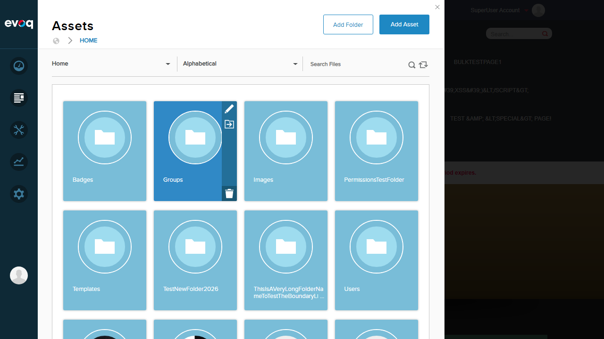
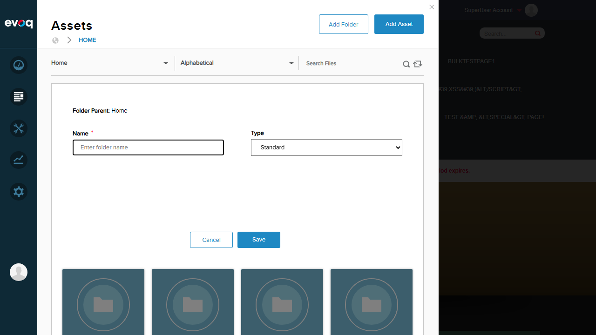
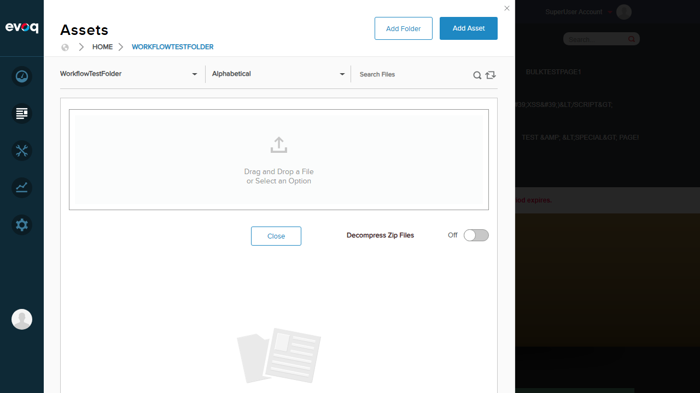
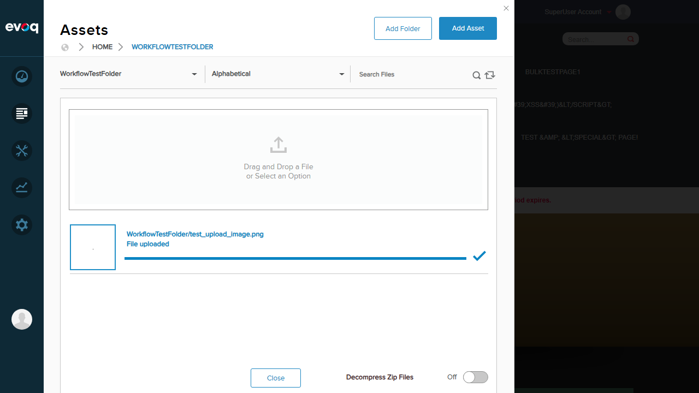
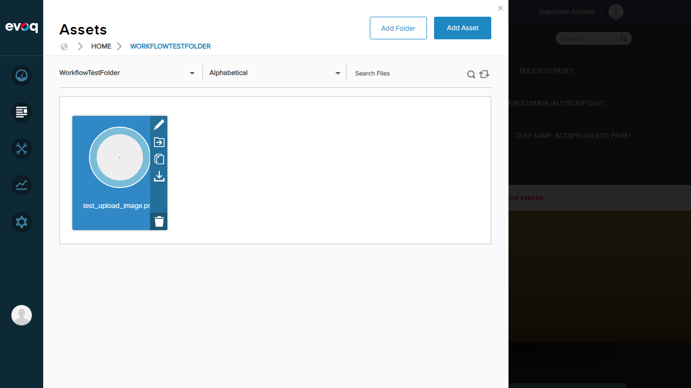
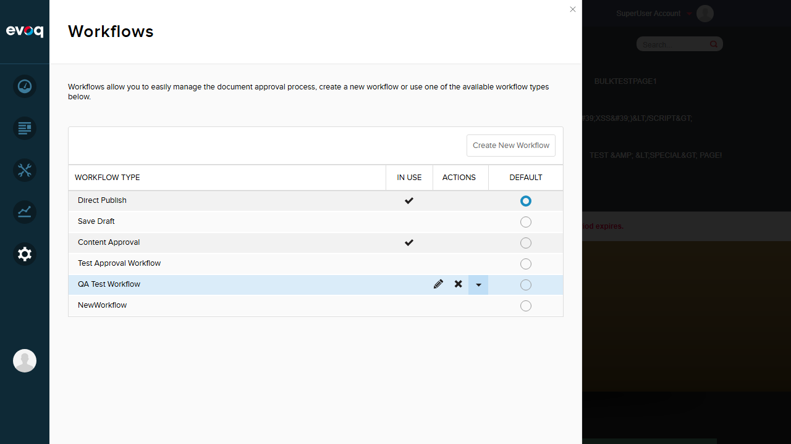

| Extension | Evoq.PersonaBar.Workflow |
|---|---|
| Feature Name | Asset Workflow Management |
| Priority | High |
| UI Location | Content > Assets > [Select File] > Workflow |
| Description | Apply workflows to files and assets, managing their approval process through workflow states. |
| Test Date | 2026-01-06 |
| Tester | Automated (Claude Code) |
| Test Scenario | Status | Notes |
|---|---|---|
| Apply workflow to new file upload | FAIL | Files uploaded but no workflow state visible - uses Direct Publish by default |
| Complete workflow state for file | FAIL | No workflow state UI accessible - file is auto-published |
| Discard workflow state for file | FAIL | No workflow state UI accessible - file is auto-published |
| Discard draft file - verify deletion | FAIL | Files are not in draft state - no discard option available |
| Complete workflow to publish file | FAIL | Files auto-publish with Direct Publish workflow |
| Add workflow note/comment to file | FAIL | No workflow interface accessible to add notes |
| Verify workflow state change notifications | FAIL | Cannot test - no workflow state changes occur |
| Check workflow history for file | FAIL | No workflow history UI found for assets |
Status: FAIL
Expected: File should enter a workflow state (Draft) and show workflow options
Actual: File uploaded successfully but appears to be directly published with no visible workflow state. The default workflow "Direct Publish" is applied.
Screenshots:
Assets panel showing folders and files
Add Folder dialog - no workflow selection option available
File upload dialog
File uploaded successfully with "File uploaded" status
Issue: The Add Folder dialog does not include workflow selection. Folders default to "Direct Publish" workflow which auto-publishes files without workflow states.
Status: FAIL
Expected: File should show workflow state with "Complete" action available
Actual: File action buttons show Edit, Move, Copy, Download, Delete - no workflow options visible. Clicking on file downloads it instead of showing details panel.
File hover showing standard actions (Edit, Move, Copy, Download, Delete) - no workflow options
Issue: No workflow state completion UI is accessible for uploaded files.
Status: FAIL
These tests could not be executed because files are not entering workflow states. The underlying issue is the same: folders use "Direct Publish" workflow by default, which bypasses the draft/review process.
Issue: Without folder-level workflow configuration (non-Direct Publish), files are immediately published and workflow actions (Complete, Discard) are not available.
Status: FAIL
These tests could not be executed as they depend on active workflow states. Since files are auto-published, there is no workflow context in which to add notes, receive notifications, or view history.
Based on review of the relevant source files:
CompleteWorkflowState - Advances file through workflow states with optional user messageDiscardWorkflowState - Reverts workflow; if file is in draft state and never published, the file is deletedIsWorkflowOnDraft)WorkflowStartFileAction - Sends notification when file enters workflowWorkflowCompleteFileAction - Publishes file version when workflow completesWorkflowDiscardFileAction - Deletes unpublished version when workflow is discardedConclusion: The code infrastructure for asset workflow management exists and appears functional. The issue is in the UI/configuration layer - there's no accessible way to configure non-Direct Publish workflows on folders through the standard Assets UI.
The system has several workflows configured:
Available workflows: Direct Publish (default), Save Draft, Content Approval, Test Approval Workflow, QA Test Workflow
Key Finding: While multi-state workflows exist, there is no visible UI in the Assets panel to assign these workflows to folders. The "Add Folder" dialog only shows Name and Type options.